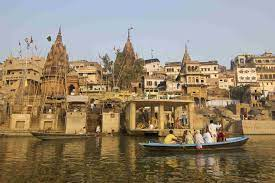
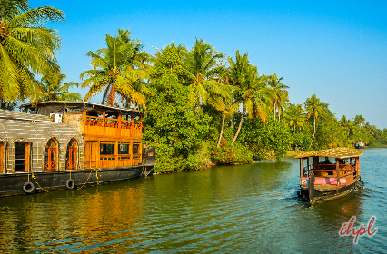
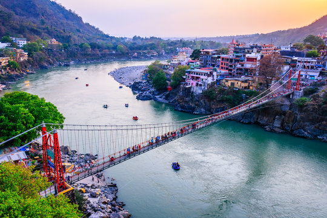

|  |
3. Varanasi, UttarPradesh
- Spiritual Capital
- Scared River Ganga
- Ghats of Varanasi
- Center of Learning
- Cultural Heritage
|
|  |
4. Kunnar, Kerala
- God's own City
- Backwaters
- Houseboats
- High Literacy Rate
- Spices and Cuisine
|
 |
5. Goa Beaches, Goa
- Beach Paradise
- Vibrant NightLife
- Diverse Cuisine
- Beaches Spots
- Adventure & Water Sports
|
 |
6. Ladakh, Jammu & Kashmir
- Mountain Regions
- Buddhist Culture
- Leh & Tourism
- Lakes & Valleys
- Moto Riding over Valleys
|
 |
7. Rishikesh, Uttarakhand
- Land of the Gods(Devbhoomi)
- Himalayan Beauty
- Adventure Hub
- Yoga Capital
- Biodiversity
|